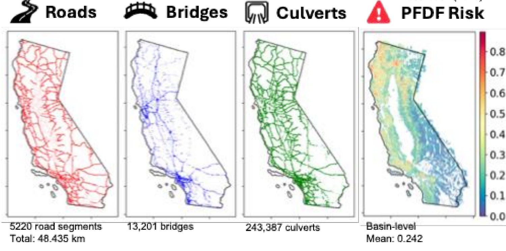
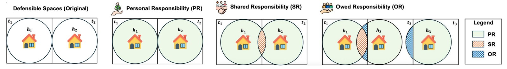
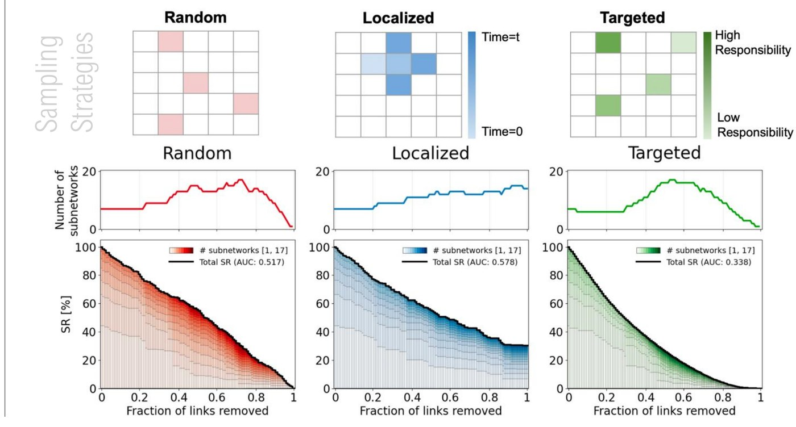
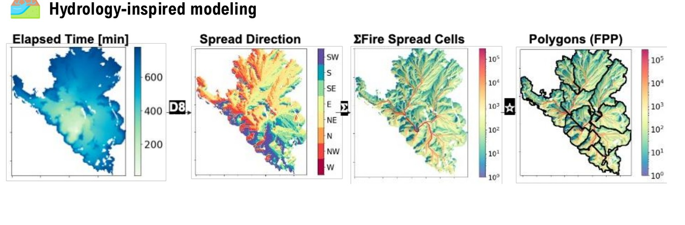
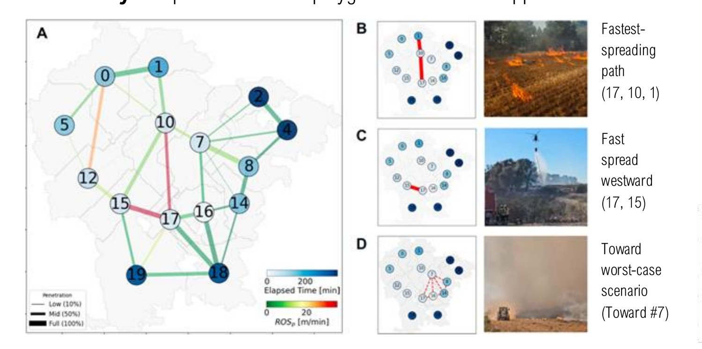

Decision Support
Overview
Decision support is where the modeling and the data meet the people who actually have to act on wildfire risk. A key part of my research is bridging policy with science to create actionable solutions: decision-support tools and software that help facilitate risk mitigation, improve pre-disaster preparedness, enhance risk communication, and elicit a more proactive response from decision-makers.
My Work
Post-Fire Debris Flow Risk
In California, the increasing frequency and severity of wildfires has amplified the risk of cascading hazards like post-fire debris flows (PFDF), which threaten to damage critical infrastructure and nearby communities. Current risk management relies heavily on engineering judgment, without a standardized way to assess this evolving risk. Working with the California Department of Transportation (Caltrans), I developed a data-driven framework that streamlines data collection and estimates a bulking factor (BF), pulling basin, soil, terrain, and flowline data from USGS and USDA sources, that can then be adjusted to a site's design requirements and local environment. Applied statewide, the framework flags PFDF risk across 5,220 road segments, 13,201 bridges, and 243,387 culverts, helping infrastructure managers prioritize where to reinforce transportation and water infrastructure.

Homeowner Spatial Responsibility
For high-risk communities in the Wildland Urban Interface (WUI), “defensible space” is a policy that requires homeowners to clear flammable hazards within a set buffer distance around their home. But as WUI communities grow denser, those buffers overlap: a hazard on one property can expose a neighbor to risk, often without anyone realizing who is actually responsible for mitigating it. To address this, I developed three spatial metrics, Personal, Shared, and Owed Responsibility, that quantify how much wildfire risk a homeowner carries alone versus shares with or owes to their neighbors, and used them to build directed spatial responsibility networks across a real WUI neighborhood.

Shared-responsibility networks tend to form small sub-networks, while owed-responsibility networks concentrate into high-risk clusters, information that helps flag which properties and neighbor groups carry outsized risk. Simulating random, localized, and targeted mitigation scenarios by iteratively removing the highest-responsibility links showed that a targeted strategy reduces total neighborhood risk fastest and fragments the network into smaller, more manageable pieces. Looking ahead, my research is extending toward disaster justice, adopting an environmental justice lens to assess how wildfire risk is disproportionately distributed across socially vulnerable communities, and to identify the barriers, such as evacuation potential, accessibility, and adaptive capacity, that amplify it.

Interactive Tool
Explore the parcel-level responsibility network directly below, or open it in a new tab for a larger view.
Spatial Networks for Fire Spread
Fire potential polygons, the spatial units fire managers use to plan suppression, are typically drawn manually by analysts: tedious, expertise-intensive, and prone to bias. I developed an automatic method that adapts hydrological basin-delineation techniques to fire spread simulations, treating fire spread time like a “reversed basin” (water flows from high elevation to low elevation; fire spreads from low time-since-ignition to high) to segment a landscape into fire potential polygons.

These polygons are connected into a spatial network weighted by penetration rate of spread, a novel metric that captures how fire is expected to move between them, used to identify critical fire pathways and suppression opportunities. I tested this method in the field during two major wildfires in Catalonia, Spain (2024 fire season) with the Catalan Fire Service: in the wind-driven Ciutadilla fire, the resulting high-risk polygons and fire pathways closely matched real suppression actions taken on the ground, and in the Vilanova de Meià fire, simulated scenarios showed that proactive tactics and prescribed burns significantly delayed fire progression, while reactive tactics provided minimal benefit. This automates a process fire analysts have historically drawn by hand, and helps fire managers shift toward more proactive, risk-informed suppression decisions.
